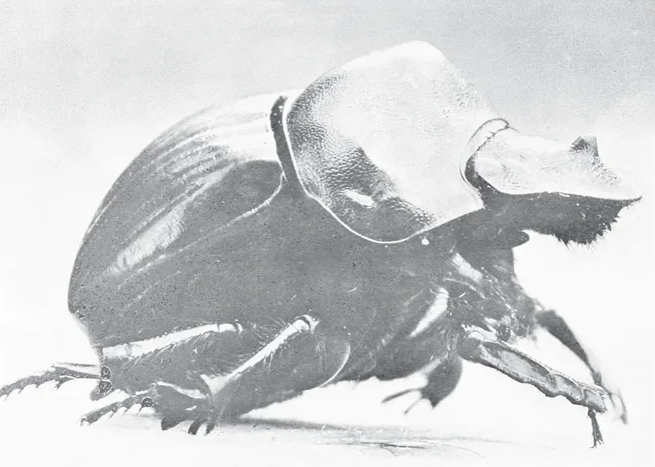
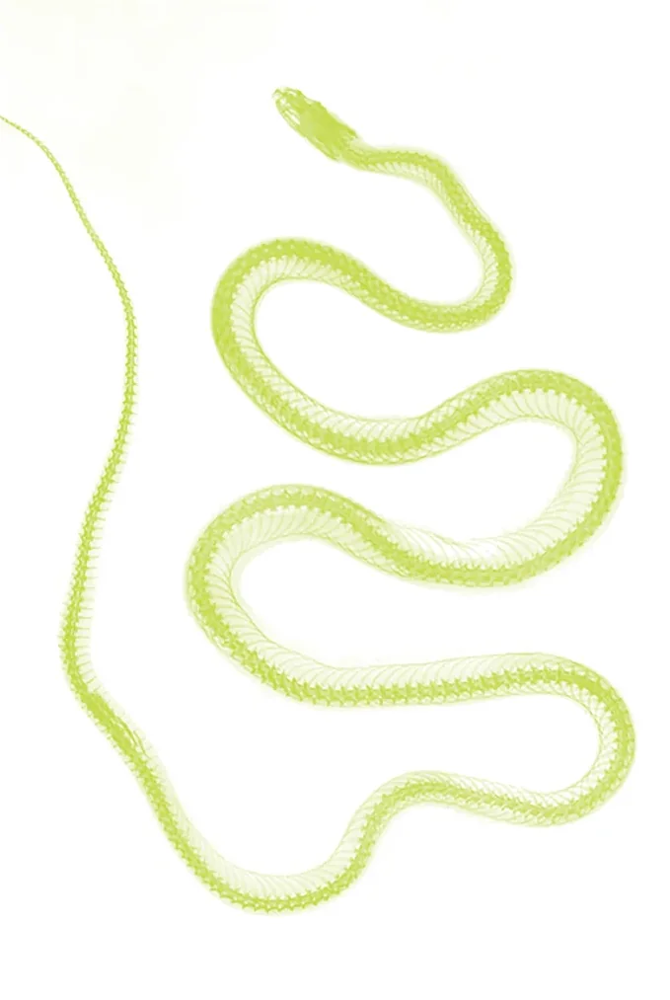
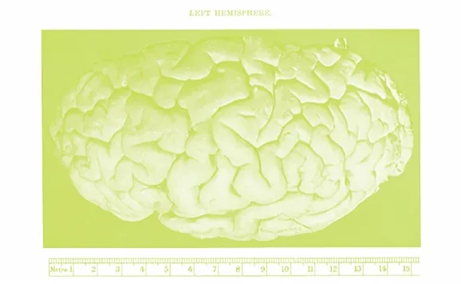
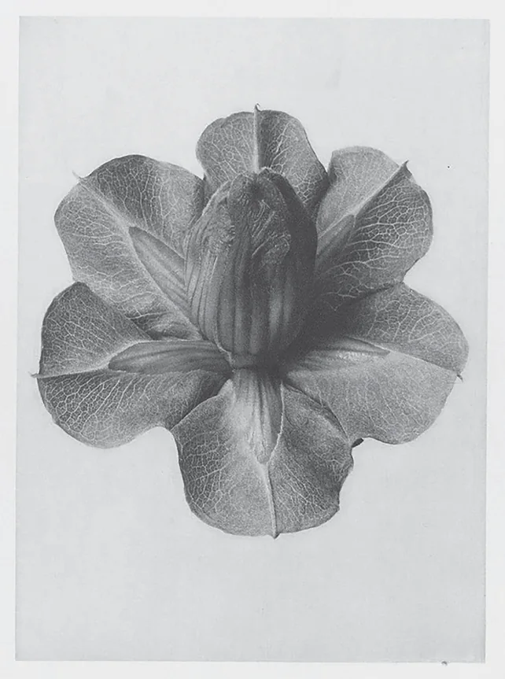
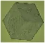
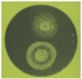
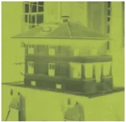
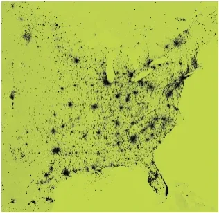

Biological Abundance
Anthrogen
I.
Instruments of Abundance
Nearly all the work of being alive is done by molecular machines — proteins.

These tiny atomic factories are constantly working away to create a whole planet worth of diverse, complex life.
They manufacture substances; they store information; they do something about it.


They even bounce, wiggle, and walk around.
They are responsible for assembling everything from the first living being to an elephant to a conscious mind to an immune system and a redwood tree.
It’s as if nature couldn’t help but tinker.










All of that from just 20 standard amino acids.
Take this small alphabet, and start with a few simple local interactions, and you can generate an astronomically large space of possible proteins with extraordinary capabilities we take for granted every day.
And yet biology has explored almost none of it.
If you were to count the total possibilities of arranging them into a typical length protein it would be circa 2×10390
That total figure is even larger than the number of atoms in the observable universe.




And that would count only average-length proteins. Imagine that for a second.


The possibilities sit on a scale that extends far beyond the names of numbers we have in the dictionary.
Not for lack of trying — all 30 million species co-inhabiting Earth have been running millions of experiments every hour, in some form, for around four billion years, and yet the entire history of life turns out to be rather short when the search space starts with 390 zeroes.
There has not been enough time to try more than a tiny fraction of what could be made from those twenty-odd parts.
Even then, evolution is a one-way, path-dependent search.

It cannot step outside the life already here, try everypossible version, then choose the best one.
All of these exceptional capabilities, discovered by contingency over deep time.
We are only beginning to ask
what else might be possible?
II.